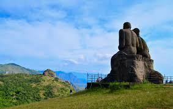

IDUKKI
Idukki (ഇടുക്കി) is a district in the Indian state of Kerala.
It was constituted on 26 January 1972, by splitting the district of Kottayam into two parts.
Its division was earlier headquartered at Kottayam city, but moved to Painavu in June 1976.
Idukki district lies amid the Western Ghats of Kerala.
Though it is regarded as the second-largest district in the region.
Area- 4,358 km2 (1,683 sq mi)
Population- Total-1,093,156,Density-251/km2 (650/sq mi)
Area- 4,358 km2 (1,683 sq mi)
Population- Total-1,093,156,Density-251/km2 (650/sq mi)
Tourist Spots
Munnar Munnar was the summer resort of the British Government in the south. The town is situated at the convergence of three mountain streams, namely Muthirappuzha, Nallathanni, and Kundala. Munnar has some of the largest tea plantations in the world. |
Ramakkalmedu Ramakkalmedu is a hill station and a hamlet in Idukki district in the Indian state of Kerala. The place is noted for its panoramic beauty and numerous windmills |